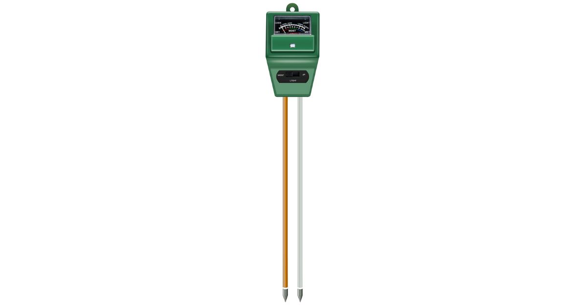
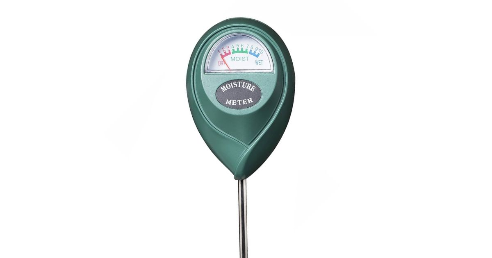
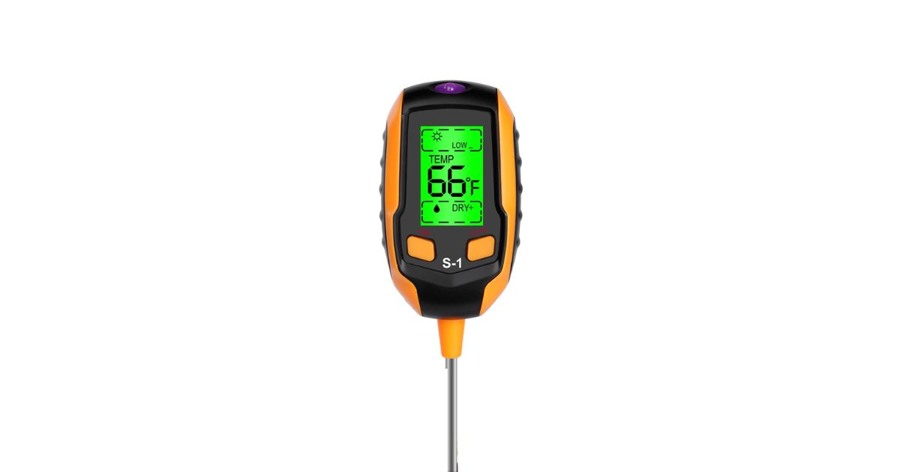
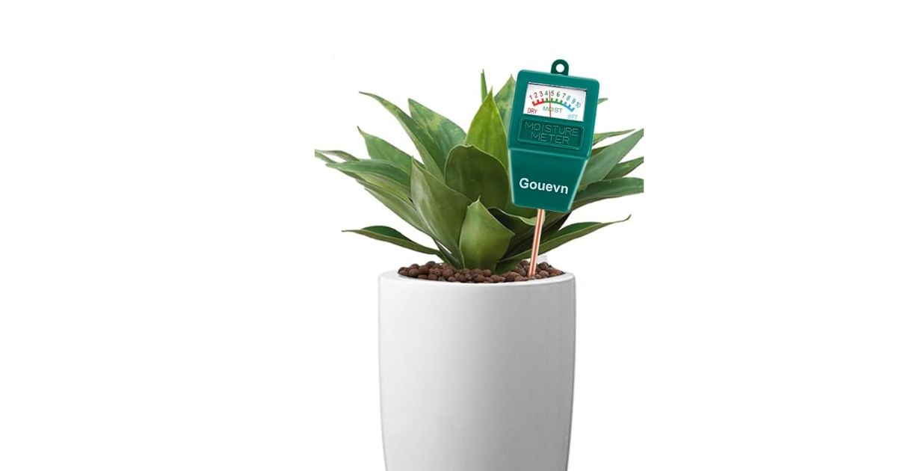
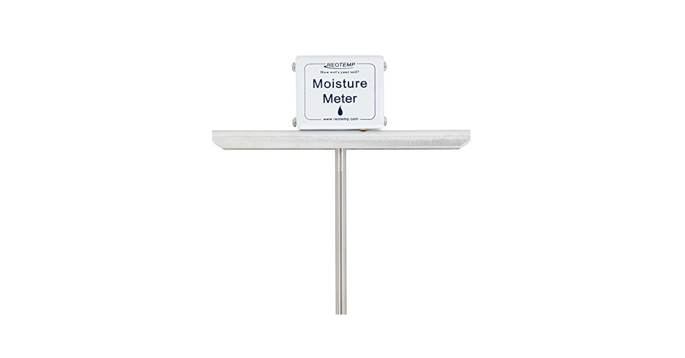
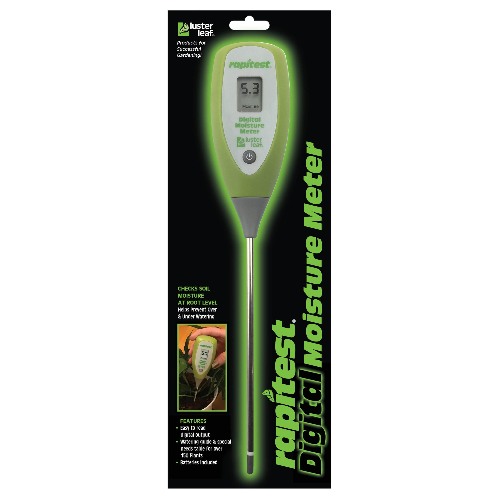
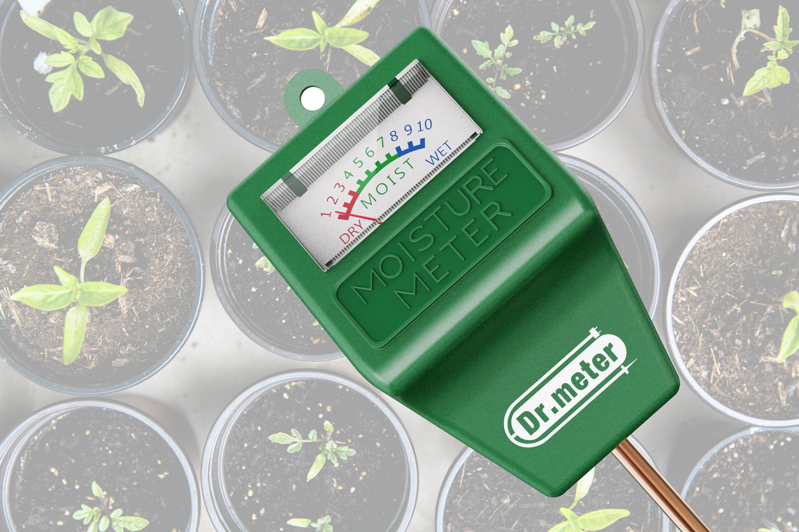

Best Soil Moisture Measuring Device for Plants : A Green Thumb’s Tale

Ever tried to keep a plant alive and ended up with a sad, drooping leaf in your hand, wondering where it all went wrong? Yeah, me too. My first brush with plant parenthood wasn’t exactly a rom-com-level success. Let’s just say my basil plant, Basil (what can I say, I’m original), didn’t survive long enough to meet its pesto destiny. But hey, every green thumb starts out a little…well, brown.
Fast-forward a few years and I’ve become that person who swears by gadgets to manage my urban jungle. Which brings me to today’s unsung hero: soil moisture measuring devices. Trust me, these are the best thing since pre-sliced bread (or at least the best thing since succulents became Instagram celebrities). Whether you’re a newbie or you’ve named your 78th Monstera, a good soil moisture meter can save you from the dreaded root rot or Sahara Desert-dry soil situation.
Why Even Bother with a Moisture Meter?
Good question. For years, I relied on the trusty “finger test.” Stick your finger an inch into the soil—if it’s dry, water it. Easy enough, right? Well, not exactly. Turns out, my “inch” varied wildly, and my interpretation of “dry” was often…less than scientific. Enter the moisture meter—a device that takes the guesswork out of the process. These little lifesavers measure the moisture level in your soil and let you know whether your plant actually needs water or if you’re just projecting your thirst onto it.
Oh, and if you’re someone like me who tends to “love” their plants a little too much, a moisture meter is a reality check you didn’t know you needed. Spoiler alert: yes, overwatering is a thing, and yes, plants can drown.
The Contenders: My Top Picks
After trying a bunch—and I mean a bunch—of soil moisture meters, here are my favorites that are worth every penny (and maybe a splurge):
-
The Classic Duo: Sonkir Soil pH and Moisture Tester
Sonkir Soil pH and Moisture Tester You know that friend who’s good at everything? That’s this device. It doesn’t just measure moisture but also checks the pH level of your soil. Fancy, right? The readings are pretty reliable, and it’s super simple to use—just stick it in the soil and voilà! Bonus: no batteries required. It’s like the analog hero in our digital world. -
High-Tech Heaven: ECOWITT Soil Moisture Sensor

High-Tech Heaven: ECOWITT Soil Moisture Sensor For the gadget geeks out there, this one connects to your Wi-Fi and sends real-time soil moisture updates straight to your phone. Because apparently, we live in the future now. Is it a bit pricey? Sure. But if you have a sprawling garden or are monitoring multiple plants, it’s a game-changer. -
Budget-Friendly Favorite: XLUX T10 Soil Moisture Meter
XLUX T10 Soil Moisture Meter Straightforward and affordable, this little guy doesn’t mess around. It measures soil moisture, full stop. It’s a great option if you’re just dipping your toes (metaphorically, please) into the plant care world. Plus, the sleek design means it doesn’t look like something you stole from a science lab. -
All-in-One Wonder: 4-in-1 Soil Meter
4-in-1 Soil Meter This device isn’t just a moisture meter—it’s the Swiss Army knife of plant gadgets. It measures sunlight, moisture, pH, and even temperature. My one gripe? It’s not the most durable thing in the world, so maybe don’t drop it repeatedly like I did. -
Long-Lasting Choice: Gouevn Soil Moisture Meter
Gouevn Soil Moisture Meter This sturdy and easy-to-use device delivers accurate readings and has a durable build. Perfect for everyday plant care without worrying about it wearing out too soon. -
Super Sensitive: Reotemp Garden and Compost Moisture Meter
Reotemp Garden and Compost Moisture Meter Originally designed for compost, this meter is a pro at measuring deep soil moisture too. The extra-long probe makes it ideal for larger pots or outdoor gardens. -
Compact Genius: Luster Leaf Rapitest Digital Moisture Meter
Luster Leaf Rapitest Digital Moisture Meter Small but mighty, this device is great for smaller indoor plants. It provides easy-to-read digital readings and is light as a feather, making it easy to move around. -
Solar-Powered Star: Dr.meter Moisture Meter
Solar-Powered Star: Dr.meter Moisture Meter What’s better than a soil meter that needs no batteries? One that’s powered by the sun! This eco-friendly option is perfect for those who want a low-maintenance yet reliable device. -
For the Aesthetic: Planter’s Choice Premium Soil Meter
This device not only works well but also looks sleek and stylish—so it blends in beautifully with your plant display instead of sticking out like a sore thumb. -
Heavy-Duty Pick: AM Conservation Group Soil Meter

AM Conservation Group Soil Meter If you’re dealing with heavier or more compact soil, this rugged tool will get the job done. It’s built for tough conditions without compromising accuracy.
My Personal Experience: A Tale of Overwatering and Redemption
Let me paint you a picture. It’s a Saturday morning, I’m sipping coffee, and I notice my fiddle-leaf fig (who I’ve named Figgy Smalls) looks a little…off. Naturally, I assume the worst and give it a generous drink of water. Two weeks later, Figgy’s leaves are dropping faster than my motivation at the gym. Turns out, I was overwatering. Who knew?
That’s when I invested in my first soil moisture meter, and honestly, it was like seeing the light. Figgy survived (thankfully), and now every plant in my collection owes its lush greenery to my trusty gadgets.
A Few Pro Tips
- Know Your Plants: Different plants have different moisture needs. A cactus doesn’t want to swim, and a fern isn’t signing up for the desert life.
- Combine Devices: If you’re super invested, pair a moisture meter with a pH tester or sunlight monitor. It’s like creating a health profile for your plant babies.
- Don’t Obsess (Too Much): These tools are here to help, not make you spiral into a data-driven frenzy. Your plants are forgiving—well, most of them.
- Read the Manual: I know, manuals aren’t exactly a page-turner, but understanding how to use your device properly ensures accurate results and prevents confusion.
- Calibrate When Needed: Some devices allow for calibration. If yours does, take a few minutes to calibrate it for the most precise readings. Putting in a little extra effort can go a long way and give you great results over time.
- Test in Multiple Spots: Soil moisture can vary even within the same pot. Check a couple of spots to get a better idea of your plant’s overall moisture level.
- Avoid Over-Pushing: Be gentle when inserting the meter into the soil. Forcing it could damage the roots or the device itself.
- Clean the Probe Regularly: After every use, give the probe a quick wipe to ensure it stays accurate and doesn’t corrode over time.
- Learn Your Plant’s Signs: While moisture meters are handy, don’t ignore the visual cues your plants give—wilted leaves or browning edges often tell their own story.
- Store Properly: Keep your device in a dry and safe place when not in use. It’ll last longer and stay reliable for years to come.
FAQs on Soil Moisture and Measuring Devices
i. What is the best soil moisture for plants?
The ideal soil moisture depends on the type of plant, but generally, soil should be moist, not wet or dry. For most houseplants, aim for moisture levels between 40-70%. Overwatering leads to root rot, while dry soil stresses plants, causing wilting.
ii. What type of device is used for measuring soil moisture?
Soil moisture meters are the most common devices for checking soil moisture. They typically have probes that you insert into the soil to get a reading. Advanced options include digital meters and smart sensors that connect to apps for real-time monitoring.
iii. What is the most accurate soil moisture meter?
For accuracy, the ECOWITT Soil Moisture Sensor and Sonkir Soil pH and Moisture Tester are highly recommended. Both are reliable and offer consistent readings, with ECOWITT providing additional features like app connectivity.
iv. Which moisture sensor is best?
The best moisture sensor depends on your needs. If you want high-tech features, the ECOWITT sensor is ideal. For a straightforward and budget-friendly option, try the XLUX T10 Moisture Meter. Both are highly rated by plant enthusiasts.
v. How to check plant soil moisture?
You can check soil moisture using one of the following methods:
- Finger Test: Gently push your finger about 1-2 inches into the soil. If it feels dry to the touch, it’s time to water.
- Moisture Meter: Place the probe of the meter into the soil to get an accurate reading of the moisture level.
- Visual Inspection: Dry or cracked soil indicates low moisture, while overly wet or muddy soil shows overwatering.
vi. What is the best moisture meter?
The Sonkir Soil pH and Moisture Tester is a versatile option for most users, while the ECOWITT Soil Moisture Sensor is great for those seeking advanced features like smartphone connectivity. For beginners, the XLUX T10 is affordable and reliable.
vii. How much moisture is good in soil?
The right amount of moisture depends on the plant. For most plants, soil should be moist to the touch but not soggy. Typically, aim for a balance where the top 1-2 inches of soil are slightly dry, but deeper layers are still moist.
viii. What is the best way to monitor soil moisture?
Using a soil moisture meter is one of the simplest and most reliable methods to measure soil moisture effectively. For tech-savvy gardeners, smart sensors like the ECOWITT Soil Moisture Sensor allow remote monitoring via apps. Alternatively, you can rely on the traditional finger test if gadgets aren’t your style.
ix. What is the best time for watering plants?
Early morning is the ideal time to water plants, as it allows the soil to absorb moisture before the heat of the day causes evaporation. Avoid watering in the evening as it can lead to excessive moisture and root rot.
x. Do moisture meters really work?
Yes, moisture meters are effective tools for determining soil moisture. While they may not replace experience and observation, they provide reliable data to help prevent overwatering or underwatering your plants. Ensure you clean the probe after use to maintain accuracy.
By using the proper tools and methods, you can ensure your plants stay vibrant and grow strong. Happy gardening! 🌱
Conclusion
In conclusion, whether you’re an accidental plant killer (been there) or a seasoned plant whisperer, a soil moisture meter is your best friend. They’re reliable, easy to use, and will probably save you from a few heart-wrenching leaf funerals. So go ahead, treat yourself—and your plants—to one of these gems. And who knows, maybe your plants will finally stop giving you side-eye.
Here’s to keeping it green and thriving!